農林水産航空協会所有の主な試験施設・装置
前記基礎試験を行うために、農林航空技術センターでは、以下の施設・装置を所有しています。
- 実機によるフライト試験のための飛行エリア
- 液剤、粒剤、肥料など基礎試験を行うための各種調査機材
- 模擬飛行散布のための屋内走行式散布装置
- ポット試験などの散布を行うための実験棟
- 調査紙上に落下した散布資材の均一性、粒子径測定の画像解析装置
- スプレーノズル吐出時の空間粒子径測定のレーザー噴霧粒子測定装置
- 散布農薬の降雨による影響を調査する人工降雨装置
施設・機材利用についてはお問合せください。
基礎試験を行うために、農林航空技術センターでは、以下の施設·装置を保有しています。
① 無人航空機テストフィールド
実機による多様な試験·調査が可能
例）農薬、種子の落下の均一性の試験
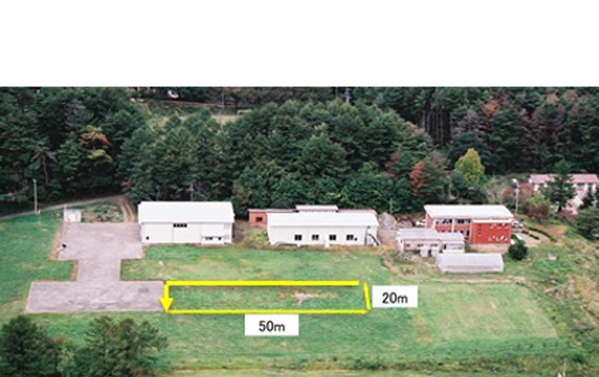
センターテストフィールド 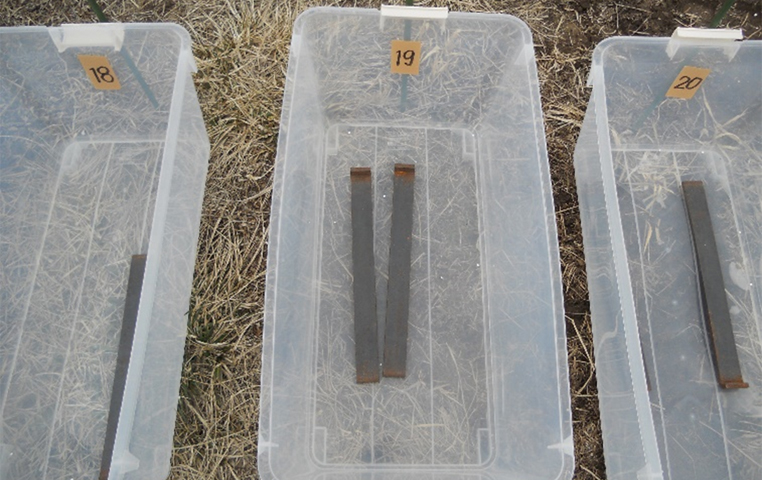
粒剤捕集箱 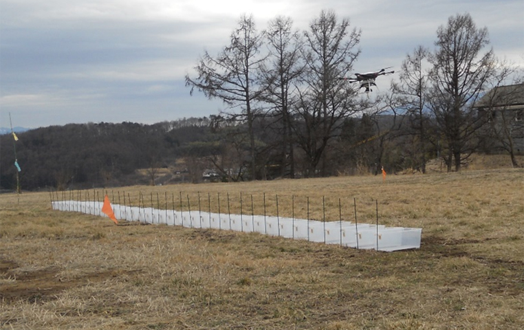
粒剤捕集箱の設置
② 資材付着の画像計測装置
調査散布液の付着状況を画像処理により計測が可能
付着状況調査 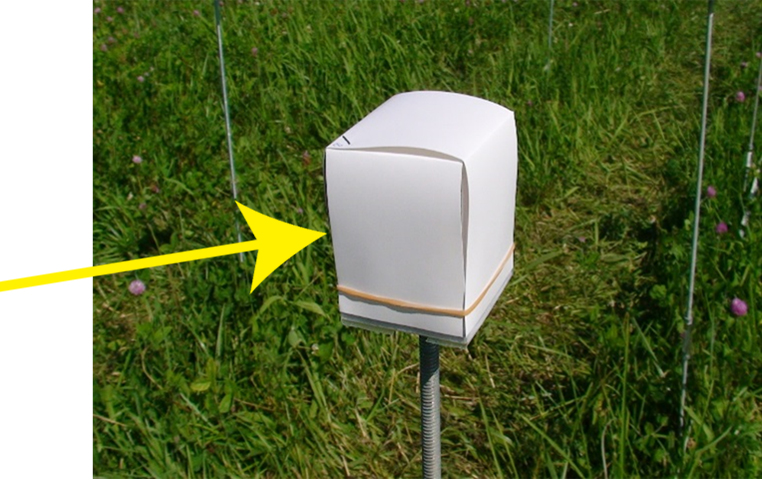
液剤調査紙 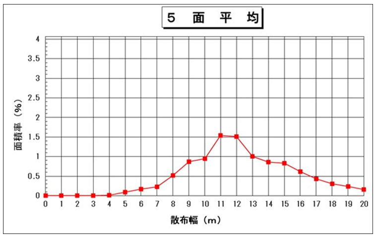
解析データ① 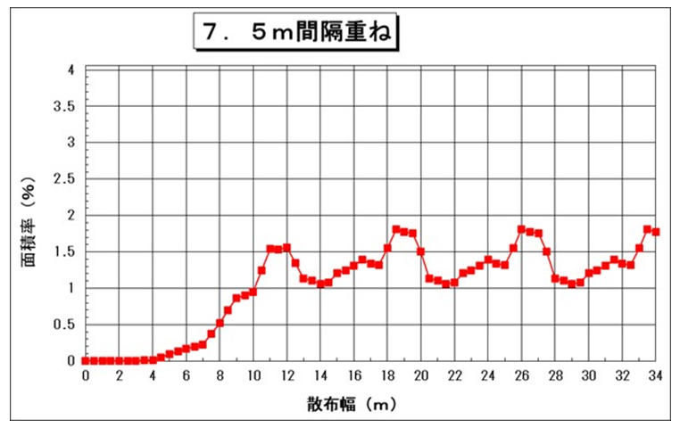
解析後処理データ
③ 走行散布装置
気象の影響を受けない室内環境での模擬散布試験が可能
例）ポット薬害試験、散布の均一性試験
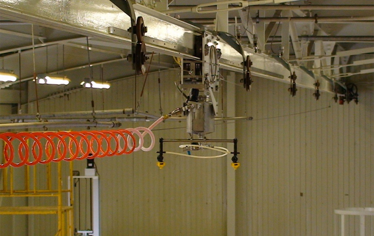
走行散布装置 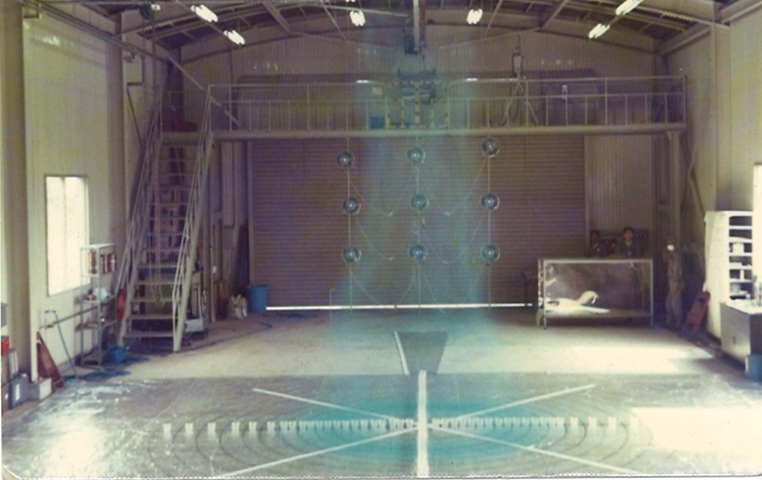
散布状況 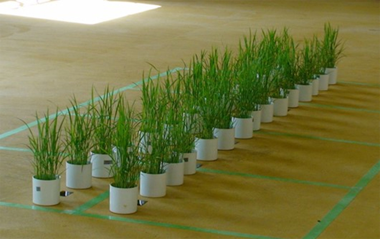
ポット稲 設置状況
④ レーザー回析スプレー粒子測定装置
噴霧粒子の分布を測定し、ドリフトしやすい微粒子(lOOμm 以下）の発生頻度の調査が可能
例）散布装置の開発のための試験
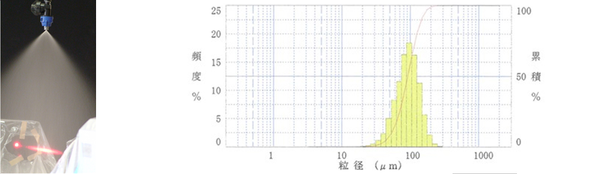
⑤ 人工降雨装置
散布農薬の降雨による影響を調査する
例）ポット植物体上の薬剤の耐雨性試験
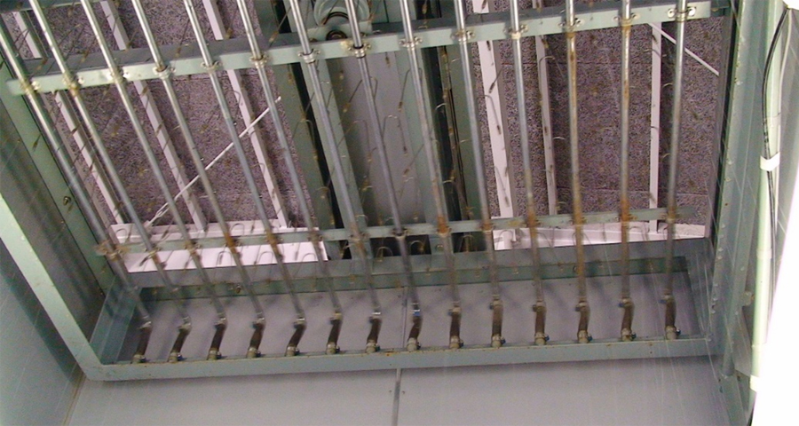
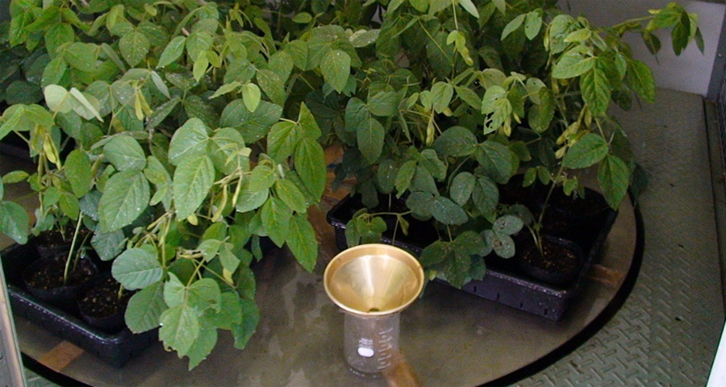
基礎試験の他、施設利用の希望があればご連絡ください。